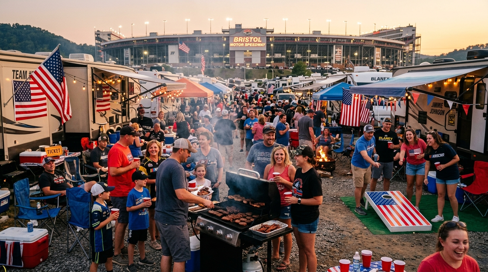

When twilight settles across the Appalachian ridges of Sullivan County, Tennessee, and the towering stadium floodlights illuminate "The Last Great Colosseum," a legendary aroma fills the mountain air. It is the sweet, mouth-watering perfume of burning hickory, sizzling pork fat, caramelized brown sugar, and tangy apple cider mop sauce. At Bristol Motor Speedway, the high-octane spectacle on the world's most feared 0.533-mile concrete oval is only half the adventure. The other half unfolds outdoors around glowing charcoal kettles, pellet smokers, and loaded camp tables.
Whether you are a seasoned pitmaster hauling an offset smoker or an RV camper firing up a portable griddle, an authentic Bristol Motor Speedway tailgate is an essential motorsport ritual. This definitive NASCAR tailgate guide gives you everything needed to master your race weekend BBQ camping Bristol trip—from grill selection and five championship pit recipes to gear checklists, speedway cooler rules, and the electric energy of a Bristol race night party under the mountain stars.
🏁 The Legendary Bristol Tailgate Culture: Why It's the Best in NASCAR
Tailgating happens at every racetrack in America, but Bristol's culture is universally celebrated as the gold standard in NASCAR. What makes Thunder Valley tailgating so special? It starts with the dramatic Appalachian topography. Unlike superspeedways situated on vast, flat plains, Bristol Motor Speedway sits carved directly into a natural mountain bowl. That bowl architecture concentrates the celebration: laughter, bluegrass music, revving engines, and fragrant wood smoke rise together up the surrounding ridges.
Bristol race fans do not simply tailgate for an hour or two before the green flag; they settle in for a four-day outdoor festival. Beginning Thursday when RV haulers roll off Highway 11E and TN-394, campsite canopies sprout across the hills. Rivalries are fierce on the high banks—whether your loyalty belongs to Kyle Larson, Chase Elliott, Denny Hamlin, or Ryan Blaney—yet the moment you enter the campground, friendly mountain hospitality takes over.
The tailgate energy adapts to both hallmark speedway events. The daytime Food City 500 in April brings crisp spring breezes, morning skillet hash, and sunlit cookouts beneath blooming dogwood trees. Meanwhile, the September Bass Pro Shops Night Race serves as the Cup Series Playoff cutoff, creating an intoxicating festival atmosphere where smokers run all night and celebration continues long past the checkered flag.
🔥 BBQ Setup Guide: What Grill to Bring to Your Campsite
Executing great barbecue at a campsite requires matching your cooking style with campground realities. Different cookers provide distinct advantages depending on your setup:
🍖 Pellet Smokers (Traeger, Green Mountain)
Best For: Reliable set-and-forget temperature control while you explore the Fan Zone.
- Pros: Digital thermostat holds 225°F for 12 straight hours; clean hardwood smoke profile.
- Requirement: Needs 110V power; having full RV electric hookups makes running pellet grills effortless.
- Tip: Store pellets in sealed waterproof buckets to protect them from humid mountain air.
🪵 Charcoal Smokers & Kettles (Weber, WSM)
Best For: Pitmasters demanding heavy smoke rings and classic charcoal crust.
- Pros: Unbeatable wood-fired bark; operates anywhere without electric utility connections.
- Cons: Demands active airflow adjustment and mindful ash disposal.
- Tip: Bring a galvanized steel bucket with a tight lid for safely cooling used charcoal ash.
🍳 Portable Propane Griddles (Blackstone 22")
Best For: High-speed cooking, hearty breakfasts, and quick pre-race meals.
- Pros: Instant heat with zero ash; ideal for morning smashburgers, eggs, bacon, and cheesesteaks.
- Cons: Cannot produce low-and-slow wood smoke flavor.
- Tip: Bring a conversion hose to run your tabletop griddle off a standard 20-lb propane tank.
⚠️ Campsite Grilling Safety & Etiquette
Always set your grill or smoker on flat, stable ground at least 10 feet away from camper canvas awnings, nylon tents, and RV slide-outs. Mountain breezes can carry sparks, so never leave open coals unattended and keep an ABC-rated fire extinguisher or water bucket nearby.
Planning to smoke your own brisket or ribs on race weekend? Reserve a spacious full hookup RV site with 30/50-amp power at Bristol Hilltop Camping by calling (423) 383-5373.
🏆 Top 5 Race Weekend BBQ Recipes for Bristol Campers
A memorable race day feast requires reliable recipes that can handle campsite prep schedules. These five fan-favorite dishes deliver championship flavor with manageable effort:
1. Colosseum Pulled Pork Butt (Hickory Smoked Pork)
Bone-in pork shoulder (Boston butt) is the ultimate race weekend centerpiece because it is forgiving, yields massive portions, and holds hot for hours in an insulated cooler.
Key Ingredients: 1 (8–9 lb) bone-in pork butt, yellow mustard binder, sweet brown-sugar rub (paprika, black pepper, garlic powder, kosher salt, brown sugar), and a 50/50 apple cider vinegar spritz.
Method: Coat pork with mustard and rub. Smoke over hickory wood at 225°F for 5 hours until a mahogany bark develops. Spritz with cider mixture, wrap tightly in foil or butcher paper with brown sugar and butter, and cook at 250°F until an internal probe slides in like warm butter (203°F). Rest wrapped inside a dry cooler for 2 hours before pulling and piling onto brioche buns with vinegar slaw.
2. Thunder Valley Smoked St. Louis Ribs (3-2-1 Method)
Tender spare ribs with a sweet, caramelized crust that yield clean, tender bites off the bone without turning mushy.
Key Ingredients: 2 racks St. Louis-cut pork spare ribs (membrane peeled), barbecue pork rub, 4 tbsp butter, 1/4 cup brown sugar, 2 tbsp honey, and 1 cup sweet barbecue sauce.
Method: Season ribs generously. Smoke meat-side up at 225°F with applewood for 3 hours. Wrap tightly in heavy foil with butter, brown sugar, and honey, cooking 2 hours to tenderize. Unwrap, brush with sweet sauce, and cook 1 final hour until the glaze caramelizes into a gleaming lacquer. Slice between bones and serve immediately.
3. Overnight Brisket Sliders with Pickled Jalapeño Slaw
Slow-smoked beef brisket on sweet rolls creates an irresistible aroma that attracts neighbors across the campground.
Key Ingredients: 1 whole packer USDA Prime beef brisket (trimmed of hard fat), coarse salt and coarse black pepper (equal parts), Hawaiian sweet rolls, pickled sliced jalapeños, and tangy mayonnaise coleslaw.
Method: Season brisket with salt and pepper. Smoke overnight at 225°F using oak or hickory wood. When the internal stall hits (~165°F), wrap tightly in pink butcher paper and continue smoking at 250°F until tender at 202°F. Hold in a towel-lined cooler for 3 hours. Slice against the grain into pencil-thick ribbons and serve on sweet buns topped with slaw and pickled jalapeños.
4. High-Banked Smoked & Crisped Wings (Alabama White & Buffalo)
Dry-brining with baking powder ensures bite-through crispy skin while infusing succulent wood smoke into every wing.
Key Ingredients: 4 lbs chicken wings (patted dry), 1 tbsp aluminum-free baking powder, 2 tbsp poultry rub, hot Buffalo sauce, and tangy Alabama white barbecue sauce (mayo, vinegar, pepper, horseradish).
Method: Toss dried wings with baking powder and rub. Smoke at 250°F for 45 minutes to absorb wood flavor. Crank the pit or portable grill to 400°F for 30 minutes, flipping once to crisp the skin until golden. Toss half in spicy Buffalo and dunk the other half in Alabama white sauce for a two-flavor crowd pleaser.
5. Skillet Campfire Sweet Jalapeño Cornbread
An Appalachian classic baked in a sizzling cast-iron skillet, featuring crispy golden edges and a sweet, peppery crumb.
Key Ingredients: 2 cups self-rising yellow cornmeal mix, 1 cup buttermilk, 2 eggs, 1/3 cup melted bacon grease or butter, 1/3 cup honey, 1 cup sharp cheddar cheese, and 1 finely diced jalapeño.
Method: Heat a 10-inch seasoned cast iron skillet on your grill with 2 tbsp bacon grease until smoking hot. Whisk batter ingredients, pour into the hot skillet, close the grill lid, and bake indirectly at 375°F for 28 to 32 minutes until a knife comes out clean. Brush warm honey butter over the crust before cutting generous wedges.
🎒 Essential Tailgate Gear Checklist: From Campfire to Trackside
A seamless race weekend depends on smart packing. Keep your gear organized into these four primary camp stations:
🧊 Coolers & Storage
- Perishable Meat Cooler: High-efficiency roto-molded cooler packed with block ice solely for meats.
- Drink Cooler: Dedicated secondary cooler for beer, soda, and water with cubed ice.
- Resting Cooler: Standard insulated cooler lined with clean towels for holding barbecue warm.
- Heavy-Duty Foil & Tongs: 18-inch aluminum foil rolls and long metal tongs for handling hot grates.
⛺ Shelter & Seating
- Pop-Up Canopy (10x10): Heavy-gauge frame with UV fabric for midday shade and rain shelter.
- Leg Weights / Spiral Stakes: Secure canopy legs against sudden Appalachian ridge wind gusts.
- Folding Lawn Chairs: Heavy-duty camp chairs with built-in cup holders and breathable mesh.
- Outdoor Ground Mat: Keeps grass, damp soil, and gravel outside your camper entryway.
🏈 Games & Tailgate Fun
- Cornhole Boards: Regulation wood boards and weather-resistant bean bags for campsite playoffs.
- Outdoor Bluetooth Speaker: Rugged, long-battery speaker for classic rock and driver scanner feeds.
- Tailgate TV & Antenna: Screen for streaming NASCAR practice, qualifying, and pre-race interviews.
- String Lights & Lanterns: LED campsite illumination for cooking safely after dark.
🧼 Prep Tools & Sanitation
- Digital Meat Thermometer: Instant-read probe for pinpointing internal barbecue temperatures.
- Insulated Food Gloves: Nitrile gloves with cotton liners for pulling hot pork and brisket.
- Wash Basin & Sanitizer: Pump soap, paper towels, and sanitizer for clean food handling.
- Contractor Trash Bags: Tough, puncture-resistant garbage bags to keep Sullivan County clean.
⏰ Tailgate Timeline: Thursday Arrival Through Saturday Night Race
Pacing your cooking keeps race week enjoyable and avoids undercooked meat. Follow this master schedule from initial setup to the checkered flag:
Arrival, Campsite Setup & Truck Series Racing
Arrive at the campground, level your RV, connect water, electric, and sewer hookups, and roll out your patio awning. Fire up the flat-top griddle for quick burgers or brats. Tune in to the UNOH 200 Truck Series race under the evening lights to kick off the weekend.
Cast-Iron Breakfast & Meat Rubbing
Cook bacon, eggs, and toast on the griddle. Trim the excess fat from your pork butts and briskets, apply your signature barbecue rubs, and store them cool so the seasonings penetrate deep into the meat.
Campground Cookout & Overnight Pit Lighting
Smoke a batch of crispy chicken wings for Friday evening happy hour. Watch the Xfinity Series Food City 300 race. Before turning in around 10:30 PM, light your smoker and put on the pork shoulder or brisket for an all-night low-temperature cook.
Race Day Temperature Check & Rib Cook
Check your meat internal temperatures. Once pork or brisket reaches 165°F, wrap tightly in butcher paper or foil with butter. Put your St. Louis ribs onto the smoker to begin their 3-2-1 cook.
Cooler Resting & Cornbread Baking
Pull the tender pork butt and brisket off the smoker. Place wrapped meats into an insulated cooler lined with towels to rest. Glaze the ribs and bake the skillet jalapeño cornbread on the grill.
Pre-Race Feast & 15-Minute Track Walk
Shred the pulled pork, slice brisket, and feast with friends and campground neighbors. Pack your clear bags and track-approved soft coolers, then take the short 15-minute downhill walk to BMS for driver introductions.
Post-Race Campfire Celebration
Stroll casually back up to camp while 100,000 fans sit trapped in three hours of highway traffic. Stoke the campfire, toast s'mores, and reheat brisket sliders while rehashing every bump-and-run lap under the stars.
Secure your basecamp at Bristol Hilltop Camping for prime track views and zero post-race traffic—call (423) 383-5373 to reserve your site.
🏔️ The Bristol Hilltop Tailgate Advantage: Hilltop Views & Big Setups
Where you park your RV or pitch your tent completely shapes your NASCAR experience. Many track-adjacent parking pastures cram vehicles bumper-to-bumper without electricity or green space. In contrast, Bristol Hilltop Camping offers an elevated outdoor retreat:
- Panoramic Hilltop Elevation: Situated high on a ridge at 133 Hilltop Street, our campground offers sweeping views of Sullivan County and sightlines toward the colossal BMS stadium structure. Cool evening mountain breezes sweep through camp, providing natural airflow for smokers.
- Generous Lot Spacing: Real tailgating requires elbow room. Our spacious RV and tent sites offer plenty of room to extend full awnings, set up 10x10 canopies, arrange circle seating, and toss bean bags on a regulation cornhole court without crowding your neighbor.
- Full Hookup Convenience: Enjoy municipal fresh water, sewer connections, and reliable 30-amp and 50-amp electrical service to power pellet grills, refrigerators, blenders, and outdoor TVs.
- Easy 0.9-Mile Walk to BMS: Located only 0.9 miles from the speedway main gate, campers enjoy an easy 15-minute walk. You skip steep parking fees, avoid packed shuttle buses, and bypass the notorious 2-to-3-hour highway gridlock on US-11E and TN-394 after the race.
🏟️ Race Day Food Policies at BMS: What You Can & Can't Bring Inside
NASCAR is uniquely fan-friendly, allowing spectators to carry their own food and beverages inside the grandstands. However, Bristol Motor Speedway strictly enforces security rules at entry gates:
| Item | ✅ Allowed in BMS | ❌ Prohibited at Gates |
|---|---|---|
| Coolers | One soft-sided cooler (max 14"x14"x14") with ice or freezer packs. | Hard-sided plastic, styrofoam, or wheeled coolers. |
| Bags | One clear plastic tote (max 14"x14"x14") plus clutch purse (4.5"x6.5"). | Opaque backpacks, duffle bags, tinted totes. |
| Beverages | Factory-sealed water, soda cans, energy drinks, and canned beer. | Glass bottles of any kind, hard liquor, open cups. |
| Food | Foil-wrapped pulled pork sandwiches, brisket sliders, snacks, chips, cookies. | Open cooking elements, loose unbagged messy stews. |
💡 Pro Pitmaster Cooler Tip
Freeze four 16-oz water bottles solid before race day and line the bottom of your 14x14 soft cooler instead of using loose bagged ice. They keep your canned beverages and foil-wrapped barbecue sandwiches ice-cold without melting into a soggy mess, and you get crisp mountain drinking water as they thaw during Stage 2 and Stage 3.
🍽️ Best Local Bristol BBQ Spots If You Don't Want to Cook
Even passionate grillmasters occasionally want to hang up their tongs and let legendary local pitmasters handle dinner. Northeast Tennessee features a distinctive wood-fired barbecue tradition celebrated across the country:
🍖 Ridgewood Barbecue (Bluff City, TN)
📍 900 Elizabethton Hwy, Bluff City, TN • 15 Mins South of Track
Founded in 1948, Ridgewood Barbecue is an iconic Appalachian institution. Their hallmark dish is hickory-smoked country ham and pork sliced paper-thin, flash-grilled, and smothered in their signature thick, sweet-tangy sauce. Served alongside blue cheese dip and fresh-cut French fries, it is a culinary pilgrimage for race fans. Call ahead for race weekend takeout orders!
🎸 Delta Blues BBQ (Bristol, TN)
📍 724 State Street, Bristol, TN • Historic Downtown
Located right on iconic State Street in downtown Bristol, Delta Blues dishes up slow-smoked Texas brisket, baby back ribs, pulled pork nachos, and an extensive craft beer list, often accompanied by live roots music.
🔥 Phil's Dream Pit (Kingsport / Bristol Corridor)
📍 4141 Fort Henry Dr, Kingsport, TN • ~20 Mins Northwest
A beloved open-pit barbecue joint cooking over hardwood logs. Phil's delivers fork-tender ribs, Carolina pulled pork, and tangy vinegar slaw. Picking up family packs on your drive in makes stocking your RV fridge effortless.
Whether you fire up your own smoker or bring back famous local barbecue, Bristol Hilltop Camping provides the ultimate race weekend home base. Call (423) 383-5373 to check weekend availability.
🤝 Community Cookouts: Meeting Fellow Race Fans at the Campground
Great barbecue is meant to be shared. At Bristol Hilltop Camping, tailgating is a shared communal tradition that connects fans from all across North America. Multi-generational camping crews return every season, forging friendships that last decades.
Campground potlucks develop naturally across our scenic ridge. On Friday and Saturday afternoons, you'll see neighbors aligning camp tables to create a sprawling Appalachian smorgasbord: one camper shares smoked chicken wings, another offers cast-iron cobbler, while others bring pimento cheese dip and baked beans.
🤝 Good Neighbor Tailgate Etiquette
- Share Pit Wisdom: Swap dry rub recipes, compare smoker wood choices, and discuss team pit strategies.
- Respect Midnight Quiet Hours: Tailgate hard during the day, but lower music volumes after midnight so everyone is rested for race day.
- Keep Appalachian Wildlife Safe: Store food securely, wipe down grills, and seal grease traps to prevent nighttime critter visits.
- Leave Your Lot Clean: Bag your trash and utilize campsite waste cans so our hilltop remains pristine for all visitors.
❓ Frequently Asked Questions: Race Weekend BBQ & Tailgating
Here are answers to the six most common questions campers have about race weekend tailgating and campfire barbecue:
Yes! Bristol Hilltop Camping welcomes smokers, charcoal grills, pellet cookers, and propane flat-tops. Grills must be placed on stable, level ground away from camper awnings and dry grass. Ash and embers must be fully cooled and placed in designated metal disposal cans.
Each ticket holder can carry one soft-sided cooler (up to 14x14x14 inches) and one clear bag (up to 14x14x14 inches). Fans may pack ice packs, canned beer, soda, water, and homemade food like sandwiches or barbecue. Glass containers, hard liquor, and hard-sided coolers are strictly prohibited.
For whole briskets or large pork butts needing 10 to 14 hours of smoke, start your pit Friday night around 10:00 PM or early Saturday morning at 4:00 AM. This timing lets the meat finish by early afternoon, leaving 2 hours to rest in an insulated cooler before slicing for a 4:00 PM feast.
Follow the two-cooler method: dedicate one premium roto-molded cooler strictly for raw meats and perishables, and use a second cooler for beverages. Place block ice on the bottom overlaid with cubed ice, keep coolers shaded under your awning, and minimize lid openings.
Campground cookouts come together naturally! Campers set up folding tables along campsite lanes on Friday and Saturday afternoons, sharing extra ribs, smoked wings, and homemade sauces while swapping race picks with neighbors before walking down to the track.
Day parking lots at Bristol Motor Speedway cost up to $50 daily, lack electricity and water hookups, have tight spacing, and suffer from 2- to 3-hour post-race traffic gridlocks. Camping at Bristol Hilltop gives you spacious lots, full hookups for pellet grills and TVs, scenic hilltop views, and a simple 15-minute walk that bypasses traffic entirely.
🏁 Claim Your Spot on the Hill for the Next Bristol Race Weekend
From wood smoke curling above the trees and mouth-watering pulled pork sliders to cold beverages shared with newfound friends as engines roar in Thunder Valley, a Bristol Motor Speedway tailgate is the pinnacle of American motorsport culture. Skip cramped, overpriced hotel rooms and avoid hours trapped in highway gridlock.
Camp on our scenic ridge, set up your smoker, and experience NASCAR weekend the way it was always intended. Ready to join the best tailgate party in NASCAR? Book your campsite at Bristol Hilltop Camping by calling (423) 383-5373 today!